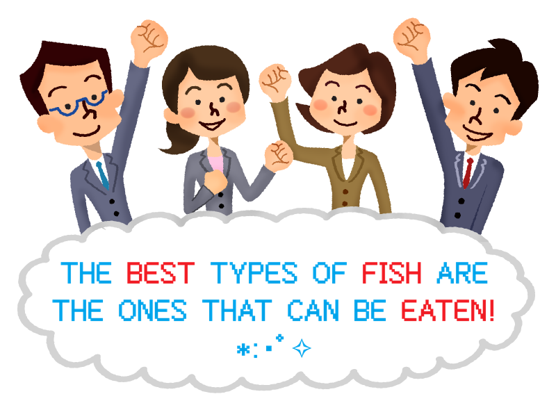
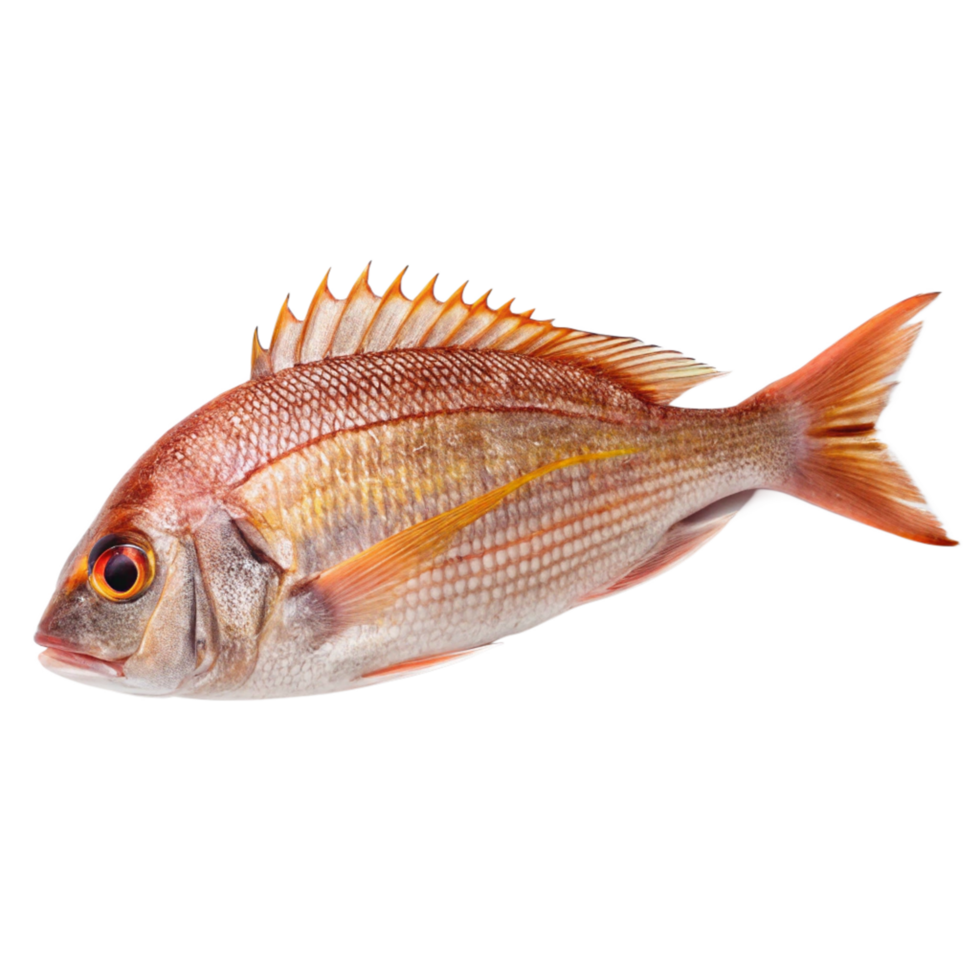
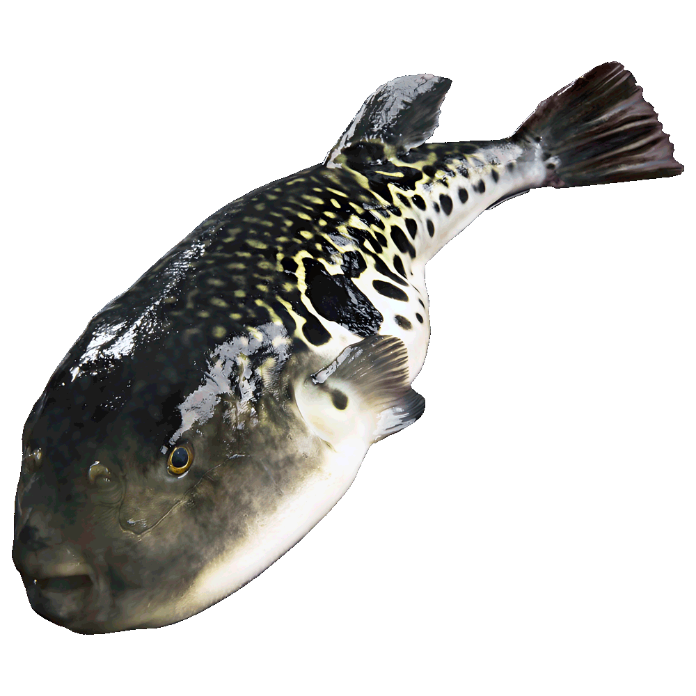
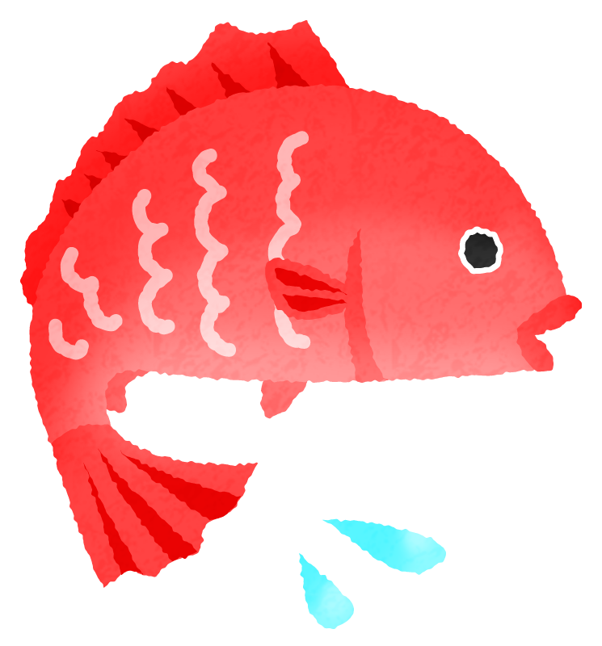
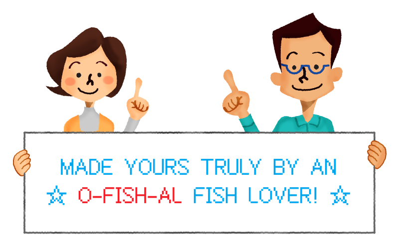
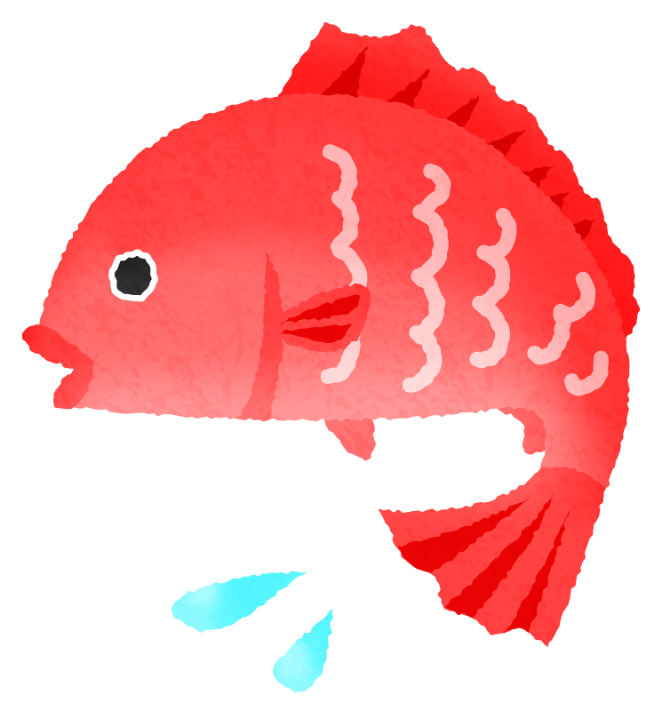

Horse Mackerel

I often see these fried! Eat with a side of shredded cabbage with lemon juice drizzled over it!
Red Sea Bream

Various fish experts note that smaller sea bream taste better: so don't be greedy!
Scallop

When choosing a good scallop, go for the ones that are completely closed! (But also make sure to smell them to ensure they're not rotten).
Pacific Saury

Apparently, pacific saury used to be fattier: they seem to have gotten skinnier due to a variety of factors.
King Crab

You can eat these raw too! It's a question though of whether you'd want to boil the crab or cut it up while its still alive. The red hue of the crab above indicates this one has been boiled.
Milkfish

My favorite fish! It really surpasses the others in terms of appearance and taste! Google describes its flavor profile as mild, slightly sweet, and creamy and they're absolutely right!
☆ WARNING: IF YOU PLAN ON TRYING THIS FISH, BUY THE BONELESS FILLETS— THEY ARE NOTORIOUS FOR THEIR TINY BONES.
Squid

It's a real mess if you accidentally cut the ink sack when cleaning!
Salmon

An incredibly versatile fish! Even the head has a lot of meat, so don't let it go to waste!
Tiger Pufferfish

☆ WARNING: YOU NEED A LICENSE TO PREPARE THIS FISH. IT IS INCREDIBLY DANGEROUS. DO NOT EVEN TRY.
Nonetheless, enjoy the video as an educational video on how an expert cleans and prepare such a poisonous fish!
Goosefish

An interesting looking fish— even the way it's cleaned is quite unique. (Although, this video may be a bit more squeamish to some).
Sole

It really lives up to its name! Up close, its face can be quite cute.
Oyster

When shucking oysters, scrape from the flat top shell! The bottom, curved shell makes a really cute cradle for it!


